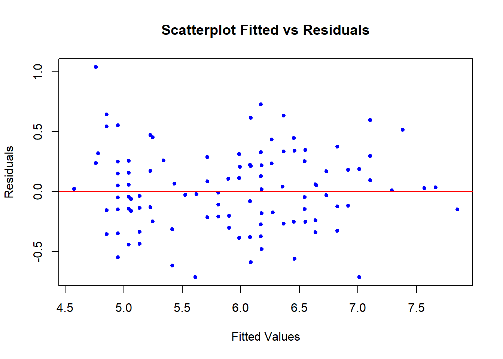
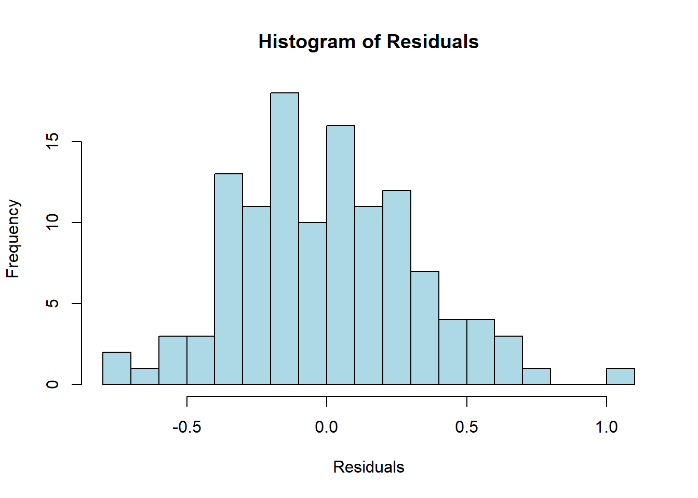

Pada modul sebelumnya, kita telah mempelajari pre-processing, pembagian data latih dan uji, serta pengolahan awal regresi berganda yang melibatkan variabel prediktor kategorik. Modul ini akan melanjutkan analisis dari pemodelan yang telah dilakukan untuk melakukan inferensi, evaluasi metrik lebih mendalam, analisis residual, serta melihat dampak dari resampling dan ukuran data terhadap kestabilan model.
Mari kita persiapkan kembali environment R kita dengan me-loadlibrary, membagi data 80% (dengan seed yang sama), dan membentuk ulang model dari modul sebelumnya.
library(tidyverse)
── Attaching core tidyverse packages ──────────────────────── tidyverse 2.0.0 ──
✔ dplyr 1.2.0 ✔ readr 2.2.0
✔ forcats 1.0.1 ✔ stringr 1.6.0
✔ ggplot2 4.0.2 ✔ tibble 3.3.1
✔ lubridate 1.9.5 ✔ tidyr 1.3.2
✔ purrr 1.2.1
── Conflicts ────────────────────────────────────────── tidyverse_conflicts() ──
✖ dplyr::filter() masks stats::filter()
✖ dplyr::lag() masks stats::lag()
ℹ Use the conflicted package (<http://conflicted.r-lib.org/>) to force all conflicts to become errors
Call:
lm(formula = Sepal.Length ~ Petal.Length + Species, data = data_1)
Residuals:
Min 1Q Median 3Q Max
-0.71283 -0.21956 -0.01342 0.21550 1.03781
Coefficients:
Estimate Std. Error t value Pr(>|t|)
(Intercept) 3.64386 0.11153 32.672 < 2e-16 ***
Petal.Length 0.93194 0.06614 14.091 < 2e-16 ***
Speciesversicolor -1.65819 0.19537 -8.487 8.02e-14 ***
Speciesvirginica -2.22476 0.27956 -7.958 1.30e-12 ***
---
Signif. codes: 0 '***' 0.001 '**' 0.01 '*' 0.05 '.' 0.1 ' ' 1
Residual standard error: 0.3263 on 116 degrees of freedom
Multiple R-squared: 0.8553, Adjusted R-squared: 0.8515
F-statistic: 228.5 on 3 and 116 DF, p-value: < 2.2e-16
Prediksi dan Interval
Dalam analisis regresi, kita seringkali ingin mengestimasi nilai target untuk suatu observasi baru. Langkah pertama adalah menentukan support (domain) dari variabel prediktor numerik kita pada data latih.
Nilai support untuk Petal.Length berada di rentang \(1.0\) hingga \(6.9\). Mari kita ambil 1 nilai di dalam rentang tersebut, misalnya \(X = 3\), untuk spesies “versicolor”.
Taksiran Nilai (Point Estimate)
Kita dapat menghitung taksiran nilai variabel target (\(\hat{Y}\)) untuk prediktor yang telah ditetapkan.
pred_point <-predict(model_1, newdata =data.frame(Petal.Length =3, Species ="versicolor"))pred_point
1
4.781485
Interpretasi untuk hasil ini yaitu jika terdapat bunga spesies versicolor dengan Petal.Length sebesar 3, taksiran rata-rata Sepal.Length-nya adalah \(4.78148\).
Interval Prediksi dan Interval Kepercayaan
Untuk mempertimbangkan ketidakpastian, kita dapat membangun interval prediksi dan interval kepercayaan untuk taksiran nilai di atas.
Secara makna dan penggunaan, kedua interval ini berbeda.
Interval Kepercayaan (Confidence Interval) digunakan untuk mengestimasi rentang rata-rata sesungguhnya (populasi) dari \(Y\) untuk nilai \(X\) tertentu. Digunakan ketika kita tertarik pada rata-rata kelompok.
Interval Prediksi (Prediction Interval) digunakan untuk memprediksi rentang nilai \(Y\) untuk suatu observasi individu baru pada nilai \(X\) tertentu. Interval ini selalu lebih lebar karena menggabungkan variansi dari estimasi rata-rata ditambah dengan variansi acak individu (\(\sigma^2\)).
Analisis Hubungan Antar Statistik (Uji F, Uji t, Korelasi)
Kemiringan dan Korelasi
Hubungan antara kemiringan garis regresi (\(\hat{\beta}_1\)) dengan koefisien korelasi (\(r\)) secara spesifik berlaku hanya pada Regresi Linear Sederhana. Hubungannya dirumuskan dengan \(\hat{\beta}_1 = r \frac{S_y}{S_x}\). Mari kita verifikasi dengan memodelkan regresi sederhana Sepal.Length dan Petal.Length.
model_slr <-lm(Sepal.Length ~ Petal.Length, data = data_1)summary(model_slr)
Call:
lm(formula = Sepal.Length ~ Petal.Length, data = data_1)
Residuals:
Min 1Q Median 3Q Max
-1.25716 -0.30493 -0.01429 0.26180 1.02090
Coefficients:
Estimate Std. Error t value Pr(>|t|)
(Intercept) 4.27799 0.09101 47.01 <2e-16 ***
Petal.Length 0.41759 0.02128 19.62 <2e-16 ***
---
Signif. codes: 0 '***' 0.001 '**' 0.01 '*' 0.05 '.' 0.1 ' ' 1
Residual standard error: 0.4119 on 118 degrees of freedom
Multiple R-squared: 0.7654, Adjusted R-squared: 0.7634
F-statistic: 385 on 1 and 118 DF, p-value: < 2.2e-16
Berdasarkan hasil regresi linear sederhana, nilai kuadrat dari statistik uji t untuk kemiringan (\(\beta_1\)) akan sama persis dengan nilai statistik uji F untuk keseluruhan model (\(t^2 = F\)). Hal ini dikarenakan pada regresi sederhana, menguji signifikansi 1 variabel sama dengan menguji keseluruhan model.
Apakah direkomendasikan untuk melakukan fitting regresi yang melalui titik asal (tanpa intersep) pada data ini? Jawabannya adalah tidak direkomendasikan. Menghilangkan intersep berarti memaksa model mengasumsikan bahwa ketika Petal.Length bernilai 0, Sepal.Length mutlak bernilai 0. Secara biologi, tidak ada bunga yang memiliki panjang kelopak 0. Intersep diperlukan secara matematis untuk menjamin residu memiliki rata-rata nol dan meminimalkan bias pada garis fit, meskipun intersep tersebut tidak memiliki interpretasi logis pada \(X=0\).
Estimasi Variansi dan Analisis Residual
Taksiran Variansi Error dan Variansi Kemiringan
Taksiran variansi dari error (\(\hat{\sigma}^2\)) diestimasi menggunakan Mean Squared Error (MSE), yang merupakan kuadrat dari Residual Standard Error (RSE) pada model.
sigma_sq <-sigma(model_1)^2sigma_sq
[1] 0.1064763
Pada regresi linear berganda, hubungan antara variansi error (\(\sigma^2\)) dengan variansi taksiran koefisien regresi (\(\hat{\sigma}^2_{\beta_j}\)) dirumuskan dalam bentuk matriks sebagai berikut:
\[Var(\hat{\beta}) = \sigma^2 (X^T X)^{-1}\]
dimana \(X\) adalah matriks yang memuat kolom intersep (yang seluruh entrinya akan bernilai 1) beserta nilai-nilai observasi prediktor. Nilai variansi untuk masing-masing taksiran parameter \(\hat{\beta}_j\) terletak pada diagonal utama dari matriks hasil perhitungan tersebut.
Persamaan ini menunjukkan secara jelas bahwa variansi dari kemiringan regresi berbanding lurus dengan variansi error (\(\sigma^2\)). Semakin besar variansi error (data semakin menyebar dari garis regresi), ketidakpastian atau variansi dari estimasi kemiringan regresinya juga akan semakin besar.
Mari kita verifikasi hubungan matematis ini di R dengan menghitungnya secara manual menggunakan operasi matriks, lalu membandingkannya dengan nilai pada diagonal utama fungsi bawaan vcov() dari model, secara spesifik untuk prediktor Petal.Length.
Analisis residual penting untuk mengecek asumsi klasik regresi.
plot(fitted(model_1), resid(model_1), main ="Scatterplot Fitted vs Residuals", xlab ="Fitted Values", ylab ="Residuals", pch =20, col ="blue")abline(h =0, col ="red", lwd =2)

Scatterplot residual menunjukkan sebaran acak di sekitar garis nol membentuk pola yang lebih tersebar di awal dibandingkan dengan di akhir. Hal ini mengindikasikan bahwa asumsi homoskedastisitas (variansi konstan) sedikit dilanggar.
hist(resid(model_1), main ="Histogram of Residuals", xlab ="Residuals", col ="lightblue", border ="black", breaks =15)

Histogram residual berbentuk cukup simetris menyerupai lonceng, yang mengindikasikan bahwa asumsi error berdistribusi normal cukup terpenuhi.
Pengaruh Resampling dan Ukuran Data
Resampling Data 80% (Data 2)
Mari kita lakukan pemilihan sampel secara acak untuk 80% data lagi menggunakan seed yang berbeda, menyimpannya di Data_2, lalu melakukan fit ulang.
Taksiran koefisien pada model yang di-fit pada data_2 sedikit berbeda dengan data_1. Hal ini menunjukkan adanya variabilitas sampling. Namun, karena modelnya stabil, perubahan koefisien tersebut tidak terlalu ekstrem.
Uji Kesesuaian Model 2:
summary(model_2)$fstatistic
value numdf dendf
265.158 3.000 116.000
Statistik F pada model_2 tetap sangat besar dan p-value sangat kecil, menunjukkan kesimpulan yang sama dengan model pada data_1: bahwa model secara signifikan berguna (fit) pada data.
Fitting 100% Data Lengkap
Bagaimana jika kita menggunakan keseluruhan 100% data untuk fitting?
model_full <-lm(Sepal.Length ~ Petal.Length + Species, data = df)summary(model_full)
Call:
lm(formula = Sepal.Length ~ Petal.Length + Species, data = df)
Residuals:
Min 1Q Median 3Q Max
-0.75310 -0.23142 -0.00081 0.23085 1.03100
Coefficients:
Estimate Std. Error t value Pr(>|t|)
(Intercept) 3.68353 0.10610 34.719 < 2e-16 ***
Petal.Length 0.90456 0.06479 13.962 < 2e-16 ***
Speciesversicolor -1.60097 0.19347 -8.275 7.37e-14 ***
Speciesvirginica -2.11767 0.27346 -7.744 1.48e-12 ***
---
Signif. codes: 0 '***' 0.001 '**' 0.01 '*' 0.05 '.' 0.1 ' ' 1
Residual standard error: 0.338 on 146 degrees of freedom
Multiple R-squared: 0.8367, Adjusted R-squared: 0.8334
F-statistic: 249.4 on 3 and 146 DF, p-value: < 2.2e-16
Taksiran koefisien dari model_full berada di antara atau sedikit bergeser dari taksiran model_1 dan model_2. Estimasi menggunakan data penuh (100%) merepresentasikan taksiran terbaik (best fit) terhadap populasi semu dari dataset yang kita miliki karena menggunakan informasi maksimal.
Uji Kesesuaian Model Penuh:
summary(model_full)$fstatistic
value numdf dendf
249.3968 3.0000 146.0000
Kesimpulan kesesuaian model tetap sama, di mana model secara signifikan berguna. Nilai F-statistik pada data penuh sangat tinggi dengan keyakinan (p-value) yang stabil.
Derajat Bebas (Degrees of Freedom):
summary(model_full)$df
[1] 4 146 4
summary(model_1)$df
[1] 4 116 4
Pada model_full, derajat bebas residual adalah \(150 - 3 - 1 = 146\). Sedangkan pada model_1 dan model_2, derajat bebasnya adalah \(120 - 3 - 1 = 116\). Penambahan jumlah data (\(n\)) langsung meningkatkan derajat bebas residual. Semakin besar derajat bebas residual, estimasi variansi akan lebih akurat dan uji t/F akan lebih “mudah” menolak \(H_0\) jika memang terdapat efek (meningkatkan statistical power).